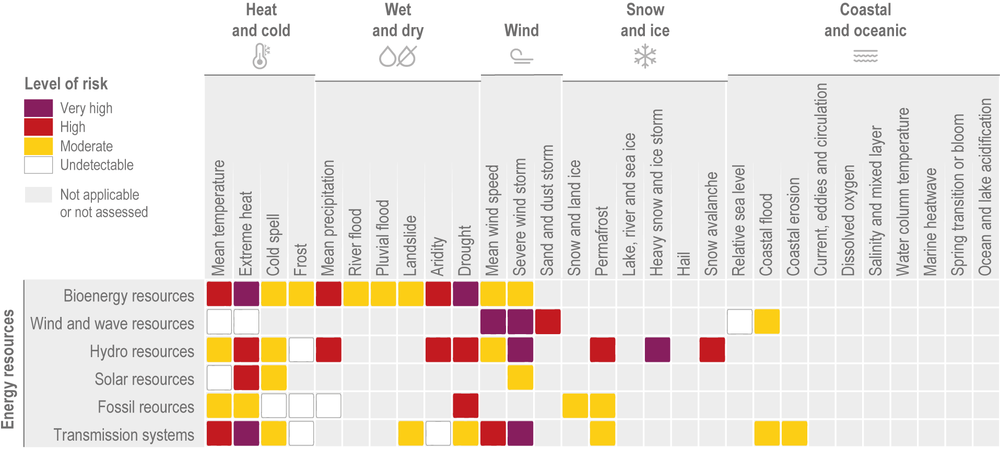

IPCC Information for Electricity-Sector Applications
The Intergovernmental Panel on Climate Change (IPCC) is the United Nations body responsible for assessing scientific knowledge related to climate change. Its assessment reports synthesize evidence from peer-reviewed literature and other credible sources to describe the state of climate science, its implications, and options for mitigation and adaptation. These reports draw extensively on climate-model simulations coordinated through initiatives such as the Coupled Model Intercomparison Project (CMIP).
This page brings together selected findings from the three Working Group contributions to the IPCC Sixth Assessment Report that are particularly relevant to the electricity sector. It first summarizes projected changes in climatic impact-drivers across North America, then considers how these hazards may translate into sectoral risks and affect different energy technologies. The final sections describe potential consequences for energy supply, demand, transmission and distribution infrastructure, and electricity-system reliability. The information provides a starting point for identifying climate factors that may warrant further investigation; it does not replace location-, asset- or decision-specific assessments of exposure, vulnerability and risk.
For guidance on incorporating this information into assessments and decisions, see Applying Climate Information.
Projected change in hazards for North America
The latest IPCC report assesses the evidence for projected changes in a wide range of climatic impact-drivers. This evidence is summarized in Working Group I Table 12.8 (Ranasinghe et al. 2021). The table presented here is adapted from that assessment. It summarizes projected changes in key climatic impact-drivers across North America under mid-century warming conditions (approximately 2°C to 2.4°C of global warming). It combines information on the direction of projected change, the confidence in those projections, and the expected emergence of the climate signal relative to natural variability.
{kind=link}
Adapted from Working Group I Table 12.8 in Ranasinghe et al. (2021).
- Snow may increase in some high elevations and during the cold season and decrease in other seasons and at lower elevations.
- Along sandy coasts and in the absence of additional sediment sinks/sources or any physical barriers to shoreline retreat.
- Increasing in northern regions and decreasing towards the south.
- Decreasing in northern regions and increasing towards the south.
- Higher confidence in northern regions and lower towards the south.
- Higher confidence in southern regions and lower towards the north.
- Higher confidence in increase for some climatic impact-driver indices during summer.
- Increase in convective conditions but decrease in winter extratropical cyclones.
Relative risk by climate hazard for North America
While the figure above identifies the climatic impact drivers expected to change across North America, the figure below, taken from Chapter 14 of AR6 WG II, illustrates how these and related hazards may translate into risks for the energy sector. It presents a qualitative rapid assessment based on the available literature and expert judgement. The categories combine the assessed importance of impacts and risks with confidence in the supporting evidence, but do not represent quantitative estimates of losses. These broad regional assessments can be a starting point and provide an initial indication of the hazards that may warrant further investigation. However, it is important to note that the relevance and severity of a hazard ultimately depend on the location, exposure, and vulnerability of the specific assets and systems being considered.

Relevance of climate hazards for energy technologies
The regional assessment above provides a broad indication of climate-related risks across the North American energy sector. Table 6.10 from Chapter 6 of AR6 Working Group III provides a complementary, technology-specific perspective. It identifies climatic impact-drivers that may be relevant to the design and operation, capacity factor, or resource requirements of different energy technologies and activities. The table shows whether these relationships may be positive, negative, or mixed; it does not quantify the magnitude or likelihood of the resulting impacts. Because this is a global assessment, the relationships identified should be interpreted alongside regional climate projections and information about the location, design, exposure, and vulnerability of the energy system being assessed.
| Energy sector | Energy activity | Climatic impact driver | ||||||||||||||||||||||||||||||||
|---|---|---|---|---|---|---|---|---|---|---|---|---|---|---|---|---|---|---|---|---|---|---|---|---|---|---|---|---|---|---|---|---|---|---|
| Heat and Cold | Wet and Dry | Wind | Snow and Ice | Coastal | Open Ocean | Other | ||||||||||||||||||||||||||||
| Mean air temperature | Extreme heat | Cold spell | Frost | Mean precipitation | River flood | Heavy precipitation and pluvial flood | Landslide | Aridity | Hydrological drought | Agricultural and ecological drought | Fire weather | Mean wind speed | Severe wind storm | Tropical cyclone | Sand and dust storm | Snow, glacier and ice sheet | Permafrost | Lake, river and sea ice | Heavy snowfall and ice storm | Hail | Snow avalanche | Relative sea level | Coastal flood | Coastal erosion | Mean ocean temperature | Marine heatwave | Ocean acidity | Ocean salinity | Dissolved oxygen | Air pollution weather | Atmospheric CO2 at surface | Radiation at surface | ||
| Hydropower | Resources (dammed) | + | + | − | − | − | ± | − | ||||||||||||||||||||||||||
| D&O (dammed) | ± | − | − | |||||||||||||||||||||||||||||||
| Resources (undammed) | + | + | + | − | − | |||||||||||||||||||||||||||||
| D&O (undammed) | ± | − | ± | − | − | |||||||||||||||||||||||||||||
| Wind power | Capacity factors | − | − | + | − | − | ||||||||||||||||||||||||||||
| D&O (onshore) | − | − | − | − | − | − | − | − | ||||||||||||||||||||||||||
| D&O (offshore) | − | − | − | − | ||||||||||||||||||||||||||||||
| Solar power | CF (PV) | − | − | − | + | |||||||||||||||||||||||||||||
| CF (CSP) | − | − | + | |||||||||||||||||||||||||||||||
| D&O | − | − | − | − | ||||||||||||||||||||||||||||||
| Ocean energy | Resources | + | ± | + | − | ± | ± | |||||||||||||||||||||||||||
| Bio-energy | Resources | ± | − | ± | − | − | − | + | ||||||||||||||||||||||||||
| Thermal power plants (incl nuclear) | Efficiency | ± | − | − | ||||||||||||||||||||||||||||||
| Vulnerability | − | − | − | − | − | − | − | − | − | − | − | |||||||||||||||||||||||
| CCS | Efficiency | ± | − | − | − | |||||||||||||||||||||||||||||
| Energy consumption | Heating | + | − | − | + | |||||||||||||||||||||||||||||
| Cooling | − | − | ± | − | ||||||||||||||||||||||||||||||
| Electric power transmission system | D&O | − | − | − | ||||||||||||||||||||||||||||||
| Vulnerability | − | − | − | − | − | − | ||||||||||||||||||||||||||||
+ Positive ± Positive or negative − Negative
Relevance of the key climatic impact drivers (and their respective changes in intensity, frequency, duration, timing, and spatial extent) for major categories of activities in the energy sector. The climatic impact drivers (CIDs) are identified in Table 12.1 in Chapter 12 of the WGI AR6 report. The symbols indicate whether a change in a climatic impact-driver may have a positive (+), negative (−), or mixed (±) relationship with the corresponding energy activity. D&O: Design and Operation; CF: Capacity Factor. Adapted from Working Group III Table 6.10 in Riahi et al. (2022).
Impact of climate change on energy systems
The IPCC assessment also describes how climatic changes can affect energy supply, demand, infrastructure, and system reliability. These effects can occur through gradual changes in average conditions, individual extreme events, or compound events involving multiple hazards. Because energy systems are connected to other critical infrastructure, disruptions can also produce consequences well beyond the assets initially affected (Dodman et al. 2022; Riahi et al. 2022).
| Hazard | Expected influence of climate change | Potential electricity-system consequences |
|---|---|---|
| Extreme winds | Uncertain change in extreme windsEvidence that extreme winds will increase or in frequency or intensity is limited (except for tropical cyclones for which intensity is expected to increase). | Mechanical failure or collision of lines; damage to electricity infrastructure, including utility-scale wind and solar facilities; and additional network stress when storm exposure coincides with high demand. |
| Wildfire | Risk expected to increase It is very likely that climate change has already increased the likelihood and severity of extreme fire weather Attribution of extreme weather and climate events and their impacts (2026) . | Damage to lines, substations and vegetation corridors; fire-related faults; and interruptions to electricity service. |
| Lightning | Probable increaseAtmospheric conditions are expected to become more favorable to thunderstom development. | Wildfire ignition, electrical arcing and simultaneous failures of multiple circuits or pieces of equipment, potentially resulting in wider outages. |
| Snow and ice | Overall risk expected to declineSporadic acute cold, snow and icing events will remain possible. | Mechanical loading and collapse of lines; cascading outages; flashovers caused by wet snow; and icing impacts on wind turbines. |
| Extreme heat | Increase in both daily minimum and daily maximum temperatures | Increased electricity demand and higher peak loads from cooling; reduced power-transfer capacity of overhead lines; and thermal stress on transformers, electrical equipment and supporting communication systems. These effects can occur simultaneously, reducing operating margins when the electricity system is under greatest demand. |
| River flooding | Changes vary by river basin and region River-flood risk depends on changes in precipitation, snowmelt, river flow, soil moisture and other catchment conditions. | Inundation or damage to substations, generating facilities and other electricity assets located in river floodplains, potentially interrupting electricity generation, transmission or distribution. |
| Heavy precipitation and pluvial flooding | Expected to increase More intense rainfall can exceed local drainage capacity. | Local inundation of substations, underground cable systems and other low-lying electrical equipment where intense rainfall exceeds drainage capacity, potentially causing localized electricity outages. |
| Coastal flooding | Exposure expected to increase Sea-level rise increases the frequency and severity of extreme coastal water levels and can amplify flooding associated with storm surge. | Inundation or damage to coastal power plants, substations, underground cable systems and other low-lying electricity infrastructure during coastal flooding and storm surge, potentially disrupting generation, transmission and distribution. |
Climate-related hazards and their potential consequences for electricity systems. The expected influence of climate change differs among hazards and remains uncertain in some cases. Electricity-system impacts depend on asset exposure, infrastructure design, system configuration, and the coincidence of hazards with operational stresses such as high electricity demand. Based on Section 6.5.4 of Riahi et al. (2022), with information on projected changes in climatic impact-drivers from Ranasinghe et al. (2021).
Energy supply and generation
Climate change can affect both the availability of energy resources and the performance of generation technologies. The direction and magnitude of these effects vary by technology, location and season.
Hydropower is sensitive to changes in precipitation, runoff, snow and glacier melt, evaporation, sediment transport and the timing of water availability. Its operation can also be affected by competition for water from communities, agriculture, industry and ecosystems. Hydropower assessments should therefore consider changes across the watershed and the operation of multi-purpose reservoirs, rather than changes in precipitation alone.
Wind generation may be affected by changes in average wind resources, variability and the frequency of conditions that require turbines to shut down. Solar photovoltaic generation is sensitive to changes in incoming solar radiation, cloud cover and temperature, as well as disruption from dust, smoke and wildfire conditions. The direction and magnitude of changes in wind and solar resources are geographically complex and remain uncertain in most regions.
Thermal power plants, including nuclear and fossil-fuel plants, can be affected by higher air and water temperatures and by constraints on cooling-water availability. Heat and drought can reduce generation efficiency, restrict output or require temporary shutdowns.
At the global scale, the IPCC assesses with high confidence that climate-related changes in hydropower, wind and solar generation should not compromise their contribution to climate-change mitigation. Effects can nevertheless be significant at regional and local scales. Assessments should therefore consider the specific resource, technology, location, operating context and interactions with other water users (Dodman et al. 2022; Riahi et al. 2022).
For more information on this topic, please refer to this section.
Energy demand
Climate change is expected to reduce heating demand, particularly in colder regions, while increasing cooling demand, particularly in warmer regions. Changes in peak demand may be more consequential for electricity systems than changes in annual energy consumption. More frequent or intense peaks can affect requirements for generation capacity, transmission, storage, demand-side management, and system flexibility. Demand and supply effects can also occur simultaneously. For example, extreme heat can increase electricity demand for cooling while reducing the efficiency of thermal generation and the capacity of transmission lines. Assessments based only on changes in annual or seasonal energy consumption may therefore overlook important risks to system adequacy (Riahi et al. 2022). For more information on this topic, please refer to this section.
Transmission and distribution infrastructure
Electricity transmission and distribution networks extend over large areas and often cross locations exposed to multiple climate hazards. High winds can damage transmission towers and lines, while falling trees and wind-blown debris are important causes of distribution-system failures. Snow, freezing rain and ice accumulation can mechanically overload conductors and supporting structures, potentially causing line collapse and cascading outages. Wet snow or ice accumulating on insulators can also create a conductive path that allows an electrical arc to cross the insulator (flashover), causing a fault and potentially disconnecting the affected line. Wildfires and lightning can damage lines and substations, while flooding can inundate substations, underground cables, and other low-lying infrastructure.
Higher temperatures present an additional operational challenge. Electrical resistance increases with temperature, reducing the carrying capacity and efficiency of transmission lines. Heat can also affect transformers and supporting communication infrastructure. These effects may occur at the same time that electricity demand for cooling is increasing, creating simultaneous pressure on network capacity and system operations (Dodman et al. 2022; Riahi et al. 2022). For more information on this topic, please refer to this section.
Electricity-system vulnerability
Electricity-system vulnerability arises from interactions among generation, demand, transmission, distribution, storage, and system operations. An individual hazard can affect several components simultaneously, while compound events can produce stresses that are not apparent when hazards are assessed separately. Examples include extreme heat increasing cooling demand while reducing thermal-generation efficiency and transmission capacity, or strong winds coinciding with high demand and operational constraints while also threatening overhead infrastructure.
Long-term changes in average climate conditions are important for system planning, but short-duration extremes can determine whether sufficient generation and network capacity are available when needed. Assessments should therefore consider reliability, resource adequacy, operational flexibility, and the coincidence of weather-sensitive supply and demand, not only potential physical damage to individual assets.
Some characteristics of low-carbon electricity systems may increase weather dependence, particularly where variable renewable generation represents a large share of supply. Other characteristics can strengthen resilience, including geographic diversification, a diverse generation mix, stronger regional interconnections, energy storage, demand-side flexibility, weatherization, distributed generation, and appropriately designed microgrids. The resilience of a future electricity system will therefore depend on its overall configuration and operation rather than on any single technology (Riahi et al. 2022).
The climate information required depends on the decision being supported. Resource assessments may emphasize long-term changes in means, seasonality and variability, whereas infrastructure design and reliability assessments may require information on extremes, compound events, spatial dependence and the coincidence of weather-sensitive supply and demand.
Hazard information alone is insufficient to determine risk. Assessments should also consider exposure, asset vulnerability, system configuration, adaptation measures and the consequences of service disruption. Because these factors can evolve over time, climate-risk assessments should be revisited as infrastructure, operations and the electricity mix change.